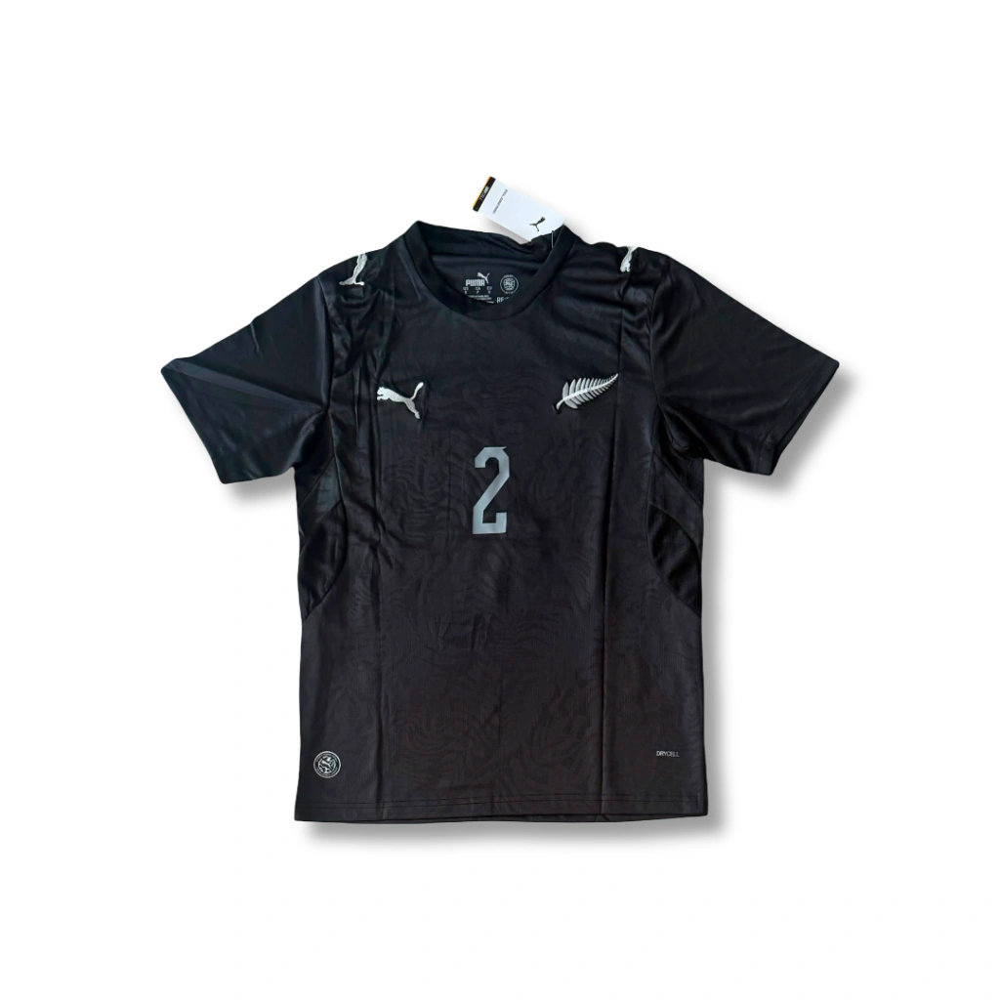
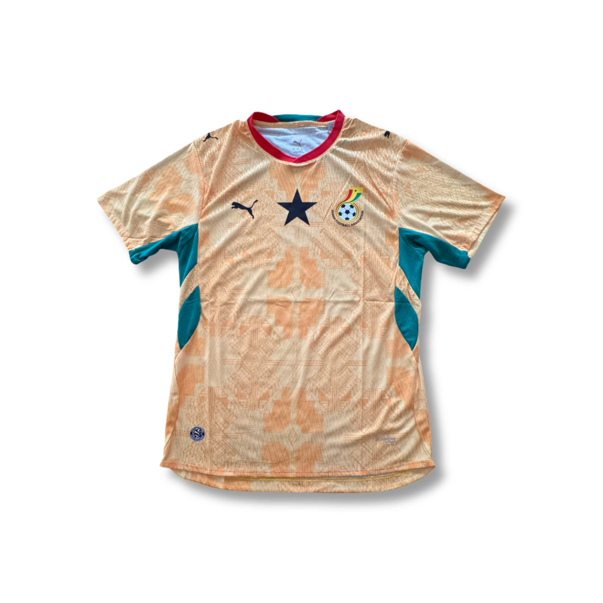
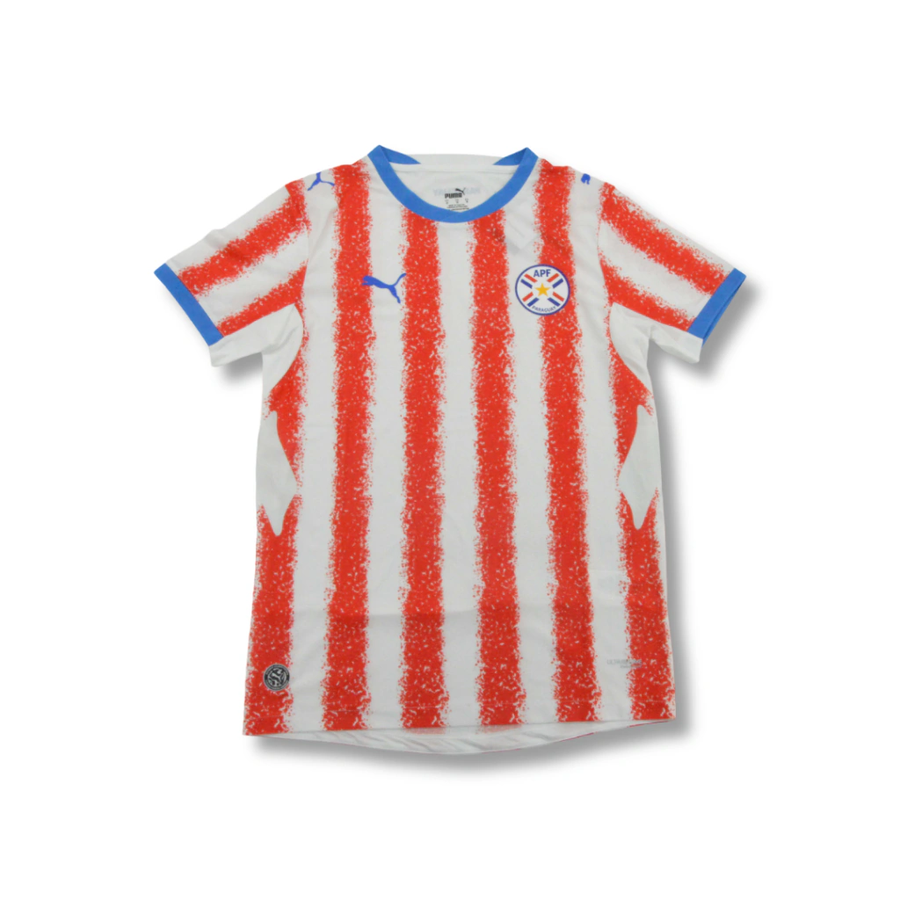

Camiseta titular de Nueva Zelanda para la temporada 2027 (Version Jugador) con el numero 2 de Payne.

Camiseta suplente de Marruecos para la temporada 2027 (Version Jugador).

Camiseta suplente de Ghana para la temporada 2027 (Version Jugador).

Camiseta titular de Paraguay para la temporada 2027 (Version Jugador) con el numero 10.